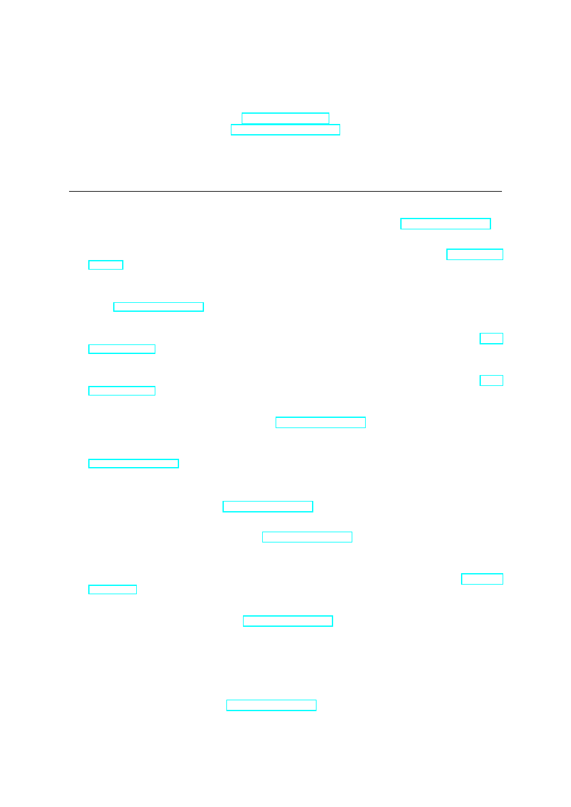
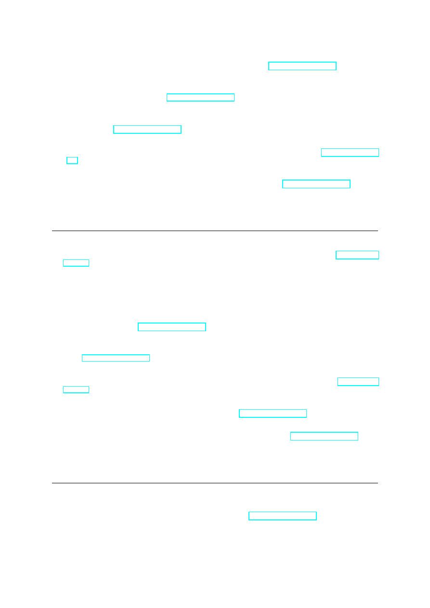
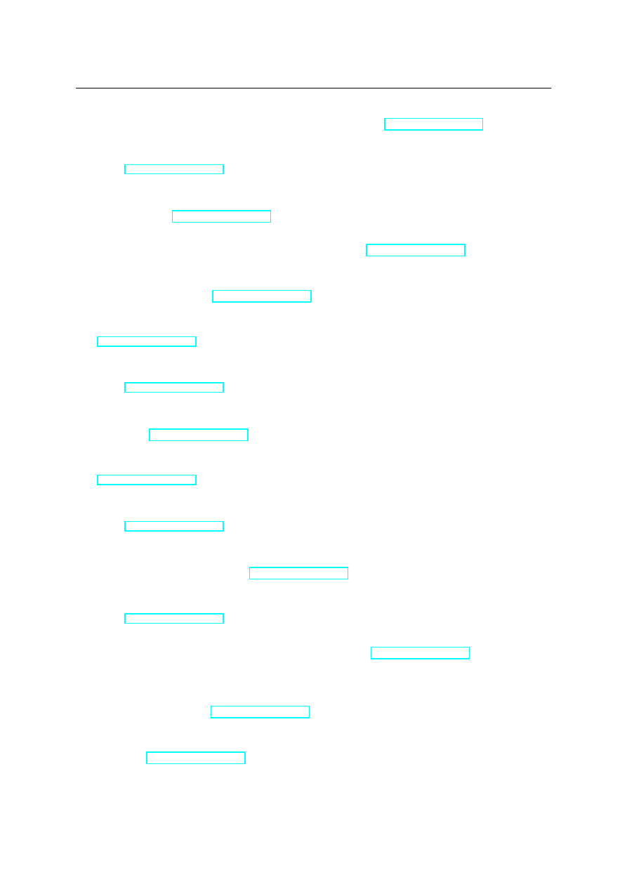
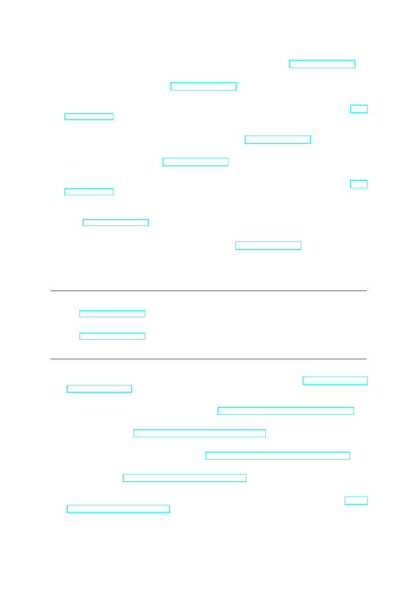
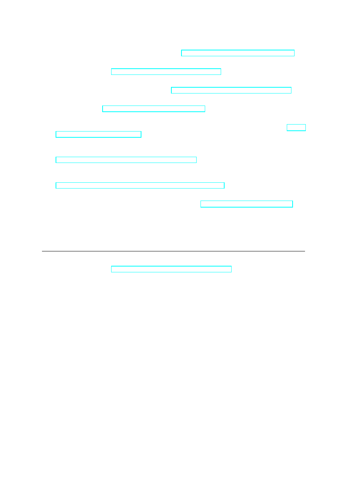

PUBLICATIONS
CHRISTOPH M. KIRSCH
ck@cs.uni-salzburg.at
www.cs.uni-salzburg.at/∼ck
CONFERENCE AND WORKSHOP PAPERS
[1] C.M. Kirsch, M. Lippautz, and H. Payer. Fast and scalable, lock-free k-FIFO queues. In Proc. International
Conference on Parallel Computing Technologies (PaCT)
, LNCS. Springer, 2013. Click here for PDF file.
[2] M. Aigner and C.M. Kirsch. ACDC: Towards a universal mutator for benchmarking heap management
systems. In Proc. International Symposium on Memory Management (ISMM). ACM, 2013. Click here for
PDF file.
[3] E. Pereira, C. Potiron, C.M. Kirsch, and R. Sengupta. Modeling and controlling the structure of heteroge-
neous mobile robotic systems: A bigactor approach. In International Systems Conference (SysCon). IEEE,
2013. Click here for PDF file.
[4] E. Pereira, C.M. Kirsch, R. Sengupta, and J. Borges de Sousa. BigActors - a model for structure-aware
computation. In Proc. International Conference on Cyber-Physical Systems (ICCPS). ACM, 2013. Click
here for PDF file.
[5] T.A. Henzinger, C.M. Kirsch, H. Payer, A. Sezgin, and A. Sokolova. Quantitative relaxation of concurrent
data structures. In Proc. Symposium on Principles of Programming Languages (POPL). ACM, 2013. Click
here for PDF file.
[6] S.S. Craciunas and C.M. Kirsch. The power of isolation. In Proc. International Conference on Embedded
and Ubiquitous Computing (EUC)
. IEEE, 2012. Click here for PDF file.
[7] A. Haas, C.M. Kirsch, M. Lippautz, and H. Payer. How FIFO is your concurrent FIFO queue? In Proc.
OOPSLA Workshop on Relaxing Synchronization for Multicore and Manycore Scalability (RACES)
, 2012.
Click here for PDF file.
[8] C.M. Kirsch, H. Payer, H. R¨ock, and A. Sokolova. Performance, scalability, and semantics of concurrent
FIFO queues. In Proc. International Conference on Algorithms and Architectures for Parallel Processing
(ICA3PP)
, LNCS. Springer, 2012. Click here for PDF file.
[9] C.M. Kirsch and H. Payer. Incorrect systems: It’s not the problem, it’s the solution. In Proc. Design
Automation Conference (DAC)
. ACM, 2012. Click here for PDF file.
[10] C.M. Kirsch, E. Pereira, R. Sengupta, H. Chen, R. Hansen, J. Huan, F. Landolt, M. Lippautz, A. Rottmann,
R. Swick, R. Trummer, and D. Vizzini. Cyber-physical cloud computing: The binding and migration prob-
lem. In Proc. International Conference on Design, Automation and Test in Europe (DATE), 2012. Click here
for PDF file.
[11] C.M. Kirsch, H. Payer, and H. R¨ock. Hierarchical PLABs, CLABs, TLABs in Hotspot. In Proc. International
Conference on Systems (ICONS)
, 2012. Click here for PDF file.
[12] H. Chen, R. Hansen, J. Huang, E. Pereira, R. Swick, D. Vizzini, R. Sengupta, C. M. Kirsch, F. Landolt,
M. Lippautz, A. Rottmann, and R. Trummer. Cloud computing on wings: Applications to air quality. In
Proc. American Astronautical Society Guidance and Control Conference (AASGNC)
. AAS, 2012.
[13] C.M. Kirsch, L. Lopes, E.R.B. Marques, and A. Sokolova. Runtime programming through model-preserving,
scalable runtime patches. In Proc. International Conference on Application of Concurrency to System Design
(ACSD)
, pages 77–86. IEEE, 2011. Click here for PDF file.
1

[14] C.M. Kirsch, H. Payer, H. R¨ock, and A. Sokolova. Brief announcement: Scalability versus semantics of
concurrent FIFO queues. In Proc. Symposium on Principles of Distributed Computing (PODC), pages 331–
332. ACM, 2011. Click here for PDF file.
[15] M. Aigner, A. Haas, C.M. Kirsch, M. Lippautz, A. Sokolova, S. Stroka, and A. Unterweger. Short-term
memory for self-collecting mutators. In Proc. International Symposium on Memory Management (ISMM).
ACM, 2011. Click here for PDF file.
[16] C.M. Kirsch, L. Lopes, E.R.B. Marques, and A. Sokolova. Runtime programming through model-preserving,
scalable runtime patches. In Proc. International Workshop on Formal Aspects of Component Software
(FACS), Doctoral Track
, volume 6921 of LNCS, pages 290–294. Springer, 2010. Click here for PDF file.
[17] S.S. Craciunas, C.M. Kirsch, and A. Sokolova. Power-aware temporal isolation with variable-bandwidth
servers. In Proc. International Conference on Embedded Software (EMSOFT). ACM, 2010. Click here for
PDF file.
[18] S.S. Craciunas, A. Haas, C.M. Kirsch, H. Payer, H. R¨ock, A. Rottmann, A. Sokolova, R. Trummer, J. Love,
and R. Sengupta. Information-acquisition-as-a-service for cyber-physical cloud computing. In Proc. Work-
shop on Hot Topics in Cloud Computing (HotCloud)
. USENIX, 2010. Click here for PDF file.
[19] S.S. Craciunas, C.M. Kirsch, and A. Sokolova. Response time versus utilization in scheduler overhead
accounting. In Proc. Real-Time and Embedded Technology and Applications Symposium (RTAS). IEEE,
2010. Click here for PDF file.
[20] T.A. Henzinger, C.M. Kirsch, E.R.B. Marques, and A. Sokolova. Distributed, modular HTL. In Proc.
Real-Time Systems Symposium (RTSS)
. IEEE, 2009. Click here for PDF file.
[21] S.S. Craciunas, C.M. Kirsch, and A. Sokolova. A workload-oriented programming model for temporal
isolation with VBS. In Online Proc. Workshop on Reconciling Performance with Predictability (RePP),
2009. Click here for PDF file.
[22] H. R¨ock, J. Auerbach, D.F. Bacon, and C.M. Kirsch. Avoiding unbounded priority inversion in barrier
protocols using gang priority management. In Proc. International Workshop on Java Technologies for Real-
time and Embedded Systems (JTRES)
. ACM, 2009. Click here for PDF file.
[23] S.S. Craciunas, C.M. Kirsch, H. Payer, H. R¨ock, and A. Sokolova. Programmable temporal isolation through
variable-bandwidth servers. In Proc. Symposium on Industrial Embedded Systems (SIES). IEEE, 2009. Click
here for PDF file.
[24] K. Hedrick, J. Jariyasunant, C.M. Kirsch, J. Love, E. Pereira, R. Sengupta, and M. Zennaro. CSL: A language
to specify and re-specify mobile sensor network behaviors. In Proc. Real-Time and Embedded Technology
and Applications Symposium (RTAS)
. IEEE, 2009. Click here for PDF file.
[25] S.S. Craciunas, C.M. Kirsch, H. Payer, H. R¨ock, and A. Sokolova. Programmable temporal isolation in real-
time and embedded execution environments. In Proc. Workshop on Isolation and Integration in Embedded
Systems (IIES)
. ACM, 2009. Click here for PDF file.
[26] H. Payer, M.A.A. Sanvido, Z.Z. Bandic, and C.M. Kirsch. Combo Drive: Optimizing cost and performance
in a heterogeneous storage device. In Proc. Workshop on Integrating Solid-state Memory into the Storage
Hierarchy (WISH)
, 2009. Click here for PDF file.
[27] S.S. Craciunas, C.M. Kirsch, H. R¨ock, and R. Trummer. The JAviator: A high-payload quadrotor UAV with
high-level programming capabilities. In Proc. AIAA Guidance, Navigation and Control Conference (GNC),
2008. Click here for PDF file.
[28] S.S. Craciunas, C.M. Kirsch, H. Payer, A. Sokolova, H. Stadler, and R. Staudinger. A compacting real-time
memory management system. In Proc. USENIX Annual Technical Conference, 2008. Click here for PDF
file.
[29] C.M. Kirsch, L. Lopes, and E.R.B. Marques. Semantics-preserving and incremental runtime patching of
real-time programs. In Proc. Workshop on Adaptive and Reconfigurable Embedded Systems (APRES), 2008.
Click here for PDF file.
2

[30] K. Chatterjee, A. Ghosal, D. Iercan, C.M. Kirsch, T.A. Henzinger, C. Pinello, and A.L. Sangiovanni-
Vincentelli. Logical reliability of interacting real-time tasks. In Proc. International Conference on Design,
Automation and Test in Europe (DATE)
, 2008. Click here for PDF file.
[31] C.M. Kirsch and R. Wilhelm. Grand challenges in embedded software. In Proc. International Conference
on Embedded Software (EMSOFT)
, pages 2–6. ACM, 2007.
[32] A. Ghosal, D. Iercan, C.M. Kirsch, T.A. Henzinger, and A.L. Sangiovanni-Vincentelli. Separate compilation
of hierarchical real-time programs into linear-bounded embedded machine code. In Online Proc. Workshop
on Automatic Program Generation for Embedded Systems (APGES)
, 2007. Click here for PDF file.
[33] J. Auerbach, D.F. Bacon, D. Iercan, C.M. Kirsch, V.T. Rajan, H. R¨ock, and R. Trummer. Java takes flight:
Time-portable real-time programming with Exotasks. In Proc. ACM SIGPLAN/SIGBED Conference on
Languages, Compilers, and Tools for Embedded Systems (LCTES)
. ACM, 2007. Click here for PDF file.
[34] A. Ghosal, T.A. Henzinger, D. Iercan, C.M. Kirsch, and A.L. Sangiovanni-Vincentelli. A hierarchical coor-
dination language for interacting real-time tasks. In Proc. International Conference on Embedded Software
(EMSOFT)
. ACM, 2006. Click here for PDF file.
[35] C.M. Kirsch, M.A.A. Sanvido, and T.A. Henzinger. A programmable microkernel for real-time systems. In
Proc. ACM/USENIX Conference on Virtual Execution Environments (VEE)
. ACM, 2005. Click here for PDF
file.
[36] T.A. Henzinger, C.M. Kirsch, and S. Matic. Composable code generation for distributed Giotto. In Proc.
ACM SIGPLAN/SIGBED Conference on Languages, Compilers, and Tools for Embedded Systems (LCTES)
.
ACM, 2005. Click here for PDF file.
[37] C.M. Kirsch. Threading by appointment. In Proc. Monterey Workshop. CRC Press, 2004. Click here for
PDF file.
[38] T.A. Henzinger and C.M. Kirsch. A typed assembly language for real-time programs. In Proc. International
Conference on Embedded Software (EMSOFT)
, pages 104–113. ACM, 2004. Click here for PDF file.
[39] A. Ghosal, T.A. Henzinger, C.M. Kirsch, and M.A.A. Sanvido. Event-driven programming with logical
execution times. In Proc. International Workshop on Hybrid Systems: Computation and Control (HSCC),
volume 2993 of LNCS, pages 357–371. Springer, 2004. Click here for PDF file.
[40] T.A. Henzinger, C.M. Kirsch, and S. Matic. Schedule-carrying code. In Proc. International Conference on
Embedded Software (EMSOFT)
, volume 2855 of LNCS, pages 241–256. Springer, 2003. Click here for PDF
file.
[41] T.A. Henzinger and C.M. Kirsch. The Embedded Machine: Predictable, portable real-time code. In Proc.
ACM SIGPLAN Conference on Programming Language Design and Implementation (PLDI)
, pages 315–326.
ACM, 2002. Click here for PDF file.
[42] T.A. Henzinger, C.M. Kirsch, R. Majumdar, and S. Matic. Time safety checking for embedded programs.
In Proc. International Workshop on Embedded Software (EMSOFT), volume 2491 of LNCS, pages 76–92.
Springer, 2002. Click here for PDF file.
[43] C.M. Kirsch, M.A.A. Sanvido, T.A. Henzinger, and W. Pree. A Giotto-based helicopter control system.
In Proc. International Workshop on Embedded Software (EMSOFT), volume 2491 of LNCS, pages 46–60.
Springer, 2002. Click here for PDF file.
[44] T.A. Henzinger, B. Horowitz, and C.M. Kirsch. Giotto: A time-triggered language for embedded program-
ming. In Proc. International Workshop on Embedded Software (EMSOFT), volume 2211 of LNCS, pages
166–184. Springer, 2001. Click here for PDF file.
[45] T.A. Henzinger, B. Horowitz, and C.M. Kirsch. Embedded control systems development with Giotto. In
Proc. ACM SIGPLAN Workshop on Languages, Compilers, and Tools for Embedded Systems (LCTES)
.
ACM, 2001. Click here for PDF file.
3

[46] T.B. Brown, T.A. Henzinger, C.M. Kirsch, A. Pasetti, and W. Pree. A reusable and platform-independent
framework for distributed control systems. In Proc. Digital Avionics Systems Conference (DASC). IEEE,
2001. Click here for PDF file.
[47] H. Ganzinger, C. Meyer, and M. Veanes. The two-variable guarded fragment with transitive relations. In
Proc. Symposium on Logic in Computer Science (LICS)
. IEEE, 1999. Click here for PDF file.
[48] H. Ganzinger, U. Hustadt, C. Meyer, and R. Schmidt. A resolution-based decision procedure for exten-
sions of K4. In Proc. Workshop on Advances in Modal Logic (AiML), volume 2 of Lecture Notes. CSLI
Publications, Stanford, CA, 1998. Click here for PDF file.
[49] F. Jacquemard, C. Meyer, and C. Weidenbach. Unification in extensions of shallow equational theories. In
Proc. International Conference on Rewriting Techniques and Applications (RTA)
, volume 1379 of LNCS.
Springer, 1998. Click here for PDF file.
[50] H. Ganzinger, C. Meyer, and C. Weidenbach. Soft typing for ordered resolution. In Proc. International
Conference on Automated Deduction (CADE)
, volume 1249 of LNCS. Springer, 1997. Click here for PDF
file.
[51] P. Graf and C. Meyer. Advanced indexing operations on substitution trees. In Proc. International Conference
on Automated Deduction (CADE)
, volume 1104 of LNCS. Springer, 1996. Click here for PDF file.
JOURNAL PAPERS
[1] S.S. Craciunas, C.M. Kirsch, H. Payer, H. R¨ock, and A. Sokolova. Temporal isolation in real-time systems:
The VBS approach. Software Tools for Technology Transfer (STTT), 15(3):189–209, 2013. Click here for
PDF file.
[2] A. Ghosal, D. Iercan, C.M. Kirsch, T.A. Henzinger, and A. Sangiovanni-Vincentelli. Separate compilation
of hierarchical real-time programs into linear-bounded Embedded Machine code. Science of Computer Pro-
gramming
, 77(2):96–112, 2012.
[3] J. Auerbach, D.F. Bacon, D. Iercan, C.M. Kirsch, V.T. Rajan, H. R¨ock, and R. Trummer. Low-latency time-
portable real-time programming with Exotasks. ACM Transactions on Embedded Computing Systems (TECS),
8(2):1–48, January 2009. Click here for PDF file.
[4] S.S. Craciunas, C.M. Kirsch, and H. R¨ock. I/O Resource management through system call scheduling. ACM
Operating Systems Review (OSR), Special Issue on Research and Developments in the Linux Kernel
, July
2008. Click here for PDF file.
[5] T.A. Henzinger and C.M. Kirsch. The Embedded Machine: Predictable, portable real-time code. ACM
Transactions on Programming Languages and Systems (TOPLAS)
, 29(6):33–61, October 2007. Click here for
PDF file.
[6] T.A. Henzinger, B. Horowitz, and C.M. Kirsch. Giotto: A time-triggered language for embedded program-
ming. Proceedings of the IEEE, 91(1):84–99, January 2003. Click here for PDF file.
[7] T.A. Henzinger, C.M. Kirsch, M.A.A. Sanvido, and W. Pree. From control models to real-time code using
Giotto. IEEE Control Systems Magazine (CSM), 23(1):50–64, February 2003. Click here for PDF file.
4
INVITED PAPERS
[1] A. Haas, T.A. Henzinger, C.M. Kirsch, M. Lippautz, H. Payer, A. Sezgin, and A. Sokolova. Distributed
queues in shared memory—multicore performance and scalability through quantitative relaxation. In Proc.
International Conference on Computing Frontiers
. ACM, 2013. Click here for PDF file.
[2] D.F. Bacon, P. Cheng, D. Grove, M. Hind, V.T. Rajan, E. Yahav, M. Hauswirth, C.M. Kirsch, D. Spoonhauer,
and M.T. Vechev. High-level real-time programming in Java. In Proc. International Conference on Embedded
Software (EMSOFT)
. ACM, 2005. Click here for PDF file.
[3] C.M. Kirsch. Principles of real-time programming. In Proc. International Workshop on Embedded Software
(EMSOFT)
, volume 2491 of LNCS, pages 61–75. Springer, 2002. Click here for PDF file.
PROCEEDINGS
[1] Gernot Heiser and Christoph M. Kirsch, editors. ACM European Conference on Computer Systems, EuroSys
2011, Salzburg, Austria, April 10 - 13, 2011, Proceedings
, New York, NY, USA, 2011. ACM.
[2] Christoph M. Kirsch and Mahmut T. Kandemir, editors. ACM SIGPLAN/SIGBED Conference on Languages,
Compilers, and Tools for Embedded Systems, LCTES 2009, Dublin, Ireland, June 19 - 20, 2009, Proceedings
,
New York, NY, USA, 2009. ACM.
[3] Christoph M. Kirsch and Reinhard Wilhelm, editors. ACM & IEEE International Conference on Embedded
Software, EMSOFT 2007, Salzburg, Austria, September 30 - October, 3, 2007, Proceedings
, New York, NY,
USA, 2007. ACM.
[4] Thomas A. Henzinger and Christoph M. Kirsch, editors. Embedded Software, First International Workshop,
EMSOFT 2001, Tahoe City, CA, USA, October, 8-10, 2001, Proceedings
, volume 2211 of LNCS. Springer,
2001.
BOOK CHAPTERS
[1] C.M. Kirsch and A. Sokolova. The logical execution time paradigm. In Advances in Real-Time Systems, pages
103–120, 2012.
[2] I. Lee, J. Leung, and S.H. Son, editors. Handbook of Real-Time and Embedded Systems, chapter The Evolution
of Real-Time Programming. CRC Press, 2007.
[3] T. Samad and G. Balas, editors. Software-Enabled Control: Information Technology for Dynamical Systems,
chapter ”Embedded Control Systems Development with Giotto”. IEEE Press and Wiley-Interscience, 2003.
SYSTEM PAPERS
[1] R. Alur, L. de Alfaro, R. Grosu, T.A. Henzinger, M. Kang, C.M. Kirsch, R. Majumdar, F. Mang, and B.Y.
Wang. jmocha: A model checking tool that exploits design structure. In Proc. International Conference on
Software Engineering (ICSE)
, 2001. Click here for PDF file.
[2] C. Weidenbach, C. Meyer, C. Cohrs, T. Engel, and E. Keen. SPASS v0.77. Journal of Automated Reasoning,
21(1), 1998.
5

POSTERS
[1] H. Payer, H. R¨ock, and C.M. Kirsch. Get what you pay for: Providing performance isolation in virtualized
execution environments. Poster at the ACM SIGOPS European Systems Conference (EuroSys), 2010. Click
here for PDF file.
[2] S.S. Craciunas, C.M. Kirsch, H. Payer, H. R¨ock, and A. Sokolova. Everyone virtualizes everything but time.
Poster at the IEEE Real-Time and Embedded Technology and Applications Symposium (RTAS), 2009. Click
here for PDF file.
TECHNICAL REPORTS
[1] C.M. Kirsch, M. Lippautz, and H. Payer. Fast and scalable k-FIFO queues. Technical Report 2012-04,
Department of Computer Sciences, University of Salzburg, June 2012. Click here for PDF file.
[2] T.A. Henzinger, C.M. Kirsch, H. Payer, A. Sezgin, and A. Sokolova. Quantitative relaxation of concurrent
data structures. Technical Report 2012-03, Department of Computer Sciences, University of Salzburg, May
2012. Click here for PDF file.
[3] C.M. Kirsch, H. Payer, H. R¨ock, and A. Sokolova. Performance, scalability, and semantics of concur-
rent FIFO queues. Technical Report 2011-03, Department of Computer Sciences, University of Salzburg,
September 2011. Click here for PDF file.
[4] S.S. Craciunas, C.M. Kirsch, and A. Sokolova. The power of isolation. Technical Report 2011-02, Depart-
ment of Computer Sciences, University of Salzburg, July 2011. Click here for PDF file.
[5] C.M. Kirsch, L. Lopes, E.R.B. Marques, and A. Sokolova. Runtime programming through model-preserving,
scalable runtime patches. Technical Report 2010-08, Department of Computer Sciences, University of
Salzburg, December 2010. Click here for PDF file.
[6] C.M. Kirsch, H. Payer, and H. R¨ock. Scal
❆: Non-linearizable computing breaks the scalability barrier.
Technical Report 2010-07, Department of Computer Sciences, University of Salzburg, November 2010.
Click here for PDF file.
[7] M. Aigner, A. Haas, C.M. Kirsch, and A. Sokolova. Short-term memory for self-collecting mutators - revised
version. Technical Report 2010-06, Department of Computer Sciences, University of Salzburg, October
2010. Click here for PDF file.
[8] M. Aigner, A. Haas, C.M. Kirsch, H. Payer, A. Sch¨onegger, and A. Sokolova. Short-term memory for self-
collecting mutators. Technical Report 2010-03, Department of Computer Sciences, University of Salzburg,
April 2010. Click here for PDF file.
[9] S.S. Craciunas, C.M. Kirsch, and A. Sokolova. Power-aware temporal isolation with variable-bandwidth
servers. Technical Report 2010-02, Department of Computer Sciences, University of Salzburg, April 2010.
Click here for PDF file.
[10] S.S. Craciunas, C.M. Kirsch, and A. Sokolova. Response time versus utilization in scheduler overhead
accounting. Technical Report 2009-03, Department of Computer Sciences, University of Salzburg, August
2009. Click here for PDF file.
[11] S.S. Craciunas, C.M. Kirsch, H. Payer, H. R¨ock, and A. Sokolova. Concurrency and scalability versus frag-
mentation and compaction with compact-fit. Technical Report 2009-02, Department of Computer Sciences,
University of Salzburg, April 2009. Click here for PDF file.
6

[12] S.S. Craciunas, C.M. Kirsch, H. R¨ock, and A. Sokolova. Real-time scheduling for workload-oriented pro-
gramming. Technical Report 2008-02, Department of Computer Sciences, University of Salzburg, September
2008. Click here for PDF file.
[13] S.S. Craciunas, C.M. Kirsch, and H. R¨ock. Shaping process semantics. Technical Report 2007-01, Depart-
ment of Computer Sciences, University of Salzburg, April 2007. Click here for PDF file.
[14] M. T¨orngren, D. Henriksson, O. Redell, C.M. Kirsch, J. El-Khoury, D. Simon, Y. Sorel, H. Zdenek, and K.-E.
˚
Arz´en. Co-design of control systems and their real-time implementation — a tool survey. Technical Report
KTH/MMK/R-06/11-SE, Department of Machine Design, Royal Institute of Technology (KTH), Stockholm,
Sweden, September 2006. Click here for PDF file.
[15] A. Ghosal, T.A. Henzinger, D. Iercan, C.M. Kirsch, and A.L. Sangiovanni-Vincentelli. Hierarchical timing
language. Technical Report UCB/EECS-2006-79, EECS Department, University of California, Berkeley,
May 2006. Click here for PDF file.
[16] C.M. Kirsch and H. R¨ock. Traffic shaping system calls using threading by appointment. Technical Report
T009, Department of Computer Sciences, University of Salzburg, August 2005. Click here for PDF file.
[17] C.M. Kirsch. Threading by appointment. Technical Report T003, Department of Computer Sciences, Uni-
versity of Salzburg, September 2004. Click here for PDF file.
[18] C.M. Kirsch, T.A. Henzinger, and M.A.A. Sanvido. A programmable microkernel for real-time systems.
Technical Report UCB//CSD-03-1250, University of California at Berkeley, California, June 2003. Click
here for PDF file.
[19] T.A. Henzinger, C.M. Kirsch, and S. Matic. Schedule-carrying code. Technical Report UCB//CSD-03-1230,
University of California at Berkeley, California, February 2003. Click here for PDF file.
[20] C.M. Kirsch. The Embedded Machine. Technical Report UCB//CSD-01-1137, University of California at
Berkeley, California, March 2001. Click here for PDF file.
[21] T.A. Henzinger, B. Horowitz, and C.M. Kirsch. Giotto: A time-triggered language for embedded program-
ming. Technical Report UCB//CSD-00-1121, University of California at Berkeley, California, 2000. Click
here for PDF file.
[22] F. Jacquemard, C. Meyer, and C. Weidenbach. Unification in extensions of shallow equational theories. Tech-
nical Report MPI-I-98-2-002, Max Planck Institute for Computer Science, Saarbr¨ucken, Germany, January
1998. Click here for PDF file.
[23] P. Graf and C. Meyer. Extended path-indexing. Technical Report MPI-I-93-253, Max Planck Institute for
Computer Science, Saarbr¨ucken, Germany, December 1993. Click here for PDF file.
THESES
[1] C. Meyer. Soft Typing for Clausal Inference Systems. Phd thesis, Saarland University, Saarbr¨ucken, Germany,
1999. Click here for PDF file.
[2] C. Meyer. Parallel unit resulting resolution. Master’s thesis, Saarland University, Saarbr¨ucken, Germany,
1996. Click here for PDF file.
SOFTWARE
1. The Scal Project: High-Performance, Multicore-Scalable Data Structures, with Andreas Haas, Thomas A.
Henzinger, Michael Lippautz, Hannes Payer, Ali Sezgin, and Ana Sokolova. Web: http://scal.cs.
uni-salzburg.at
7

2. The Tiptoe Project: A Compositional Real-Time Operating System, with Silviu Craciunas, Hannes Payer,
Harald R¨ock, Ana Sokolova, and Horst Stadler. Web: http://tiptoe.cs.uni-salzburg.at
3. The Jarol Project: A Java Infrastructure for Control Systems, with Bernhard Kast, Eduardo Marques, and
Rainer Trummer. Web: http://jarol.cs.uni-salzburg.at
4. The JAviator Project: Quadrotor UAV Software Entirely Written in Java, with Joshua Auerbach, David
Bacon, Harald R¨ock, and Rainer Trummer. Web: http://javiator.cs.uni-salzburg.at
5. The TAP Project: Concurrent Programming with Threading by Appointment, with Silviu Craciunas and
Harald R¨ock. Web: http://tap.cs.uni-salzburg.at
6. The HTL Project: Compositional Real-Time Programming in a Hierarchical Timing Language, with Arkadeb
Ghosal, Thomas A. Henzinger, Daniel Iercan, and Alberto L. Sangiovanni-Vincentelli. Web: http:
//htl.cs.uni-salzburg.at
7. Giotto: An Embedded Programming Language, Compiler, and Runtime System for Distributed Control
Systems, with Arkadeb Ghosal, Thomas A. Henzinger, Slobodan Matic, and Marco A.A. Sanvido. Web:
http://embedded.eecs.berkeley.edu/giotto
8. jMocha: A Model Checking Tool that Exploits Design Structure, with Rajeev Alur, Luca de Alfaro, Radu
Grosu, Thomas A. Henzinger, Minsu Kang, Rupak Majumdar, Freddy Mang, and Bow-Yaw Wang. Web:
http://embedded.eecs.berkeley.edu/research/mocha
9. SPASS v0.77: An Automated Theorem Prover for First-Order Logic with Equality, with Christoph Weiden-
bach, Christian Cohrs, Thorsten Engel, and Enno Keen. Web: http://spass.mpi-sb.mpg.de
10. PURR: Parallel Unit Resulting Resolution, a concurrent first-order theorem prover with advanced indexing
operations, see Master’s Thesis.
11. ACID: A Collection of Indexing Data Structures, implemented in C and Prolog, with Peter Graf.
HARDWARE
1. The JAviator: A Quadrotor Helicopter and Software Laboratory for Time-Portable Java Programming, with
Rainer Trummer. Web: http://javiator.cs.uni-salzburg.at
8